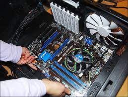

La réalité des développeurs dans l'industrie...

Le montage d'un ordinateur est un domaine très important pour un développeur dans l'industrie, si il est un technicien informatique. Il faut savoir les différentes composantes que l'ordinateur possède et comment les placer. Si les composantes de l'ordinateur sont défectueuses ou passé date, il sera le travail du développeur de s'occuper de remonter l'ordinateur.